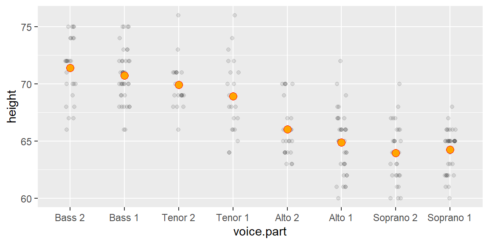
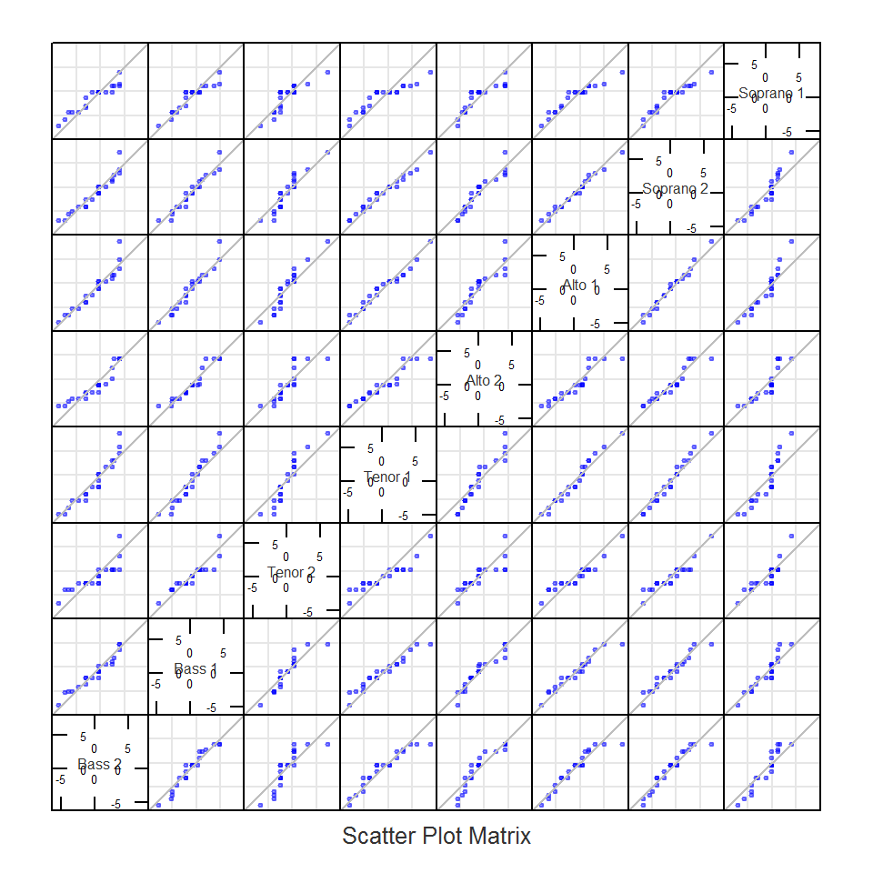
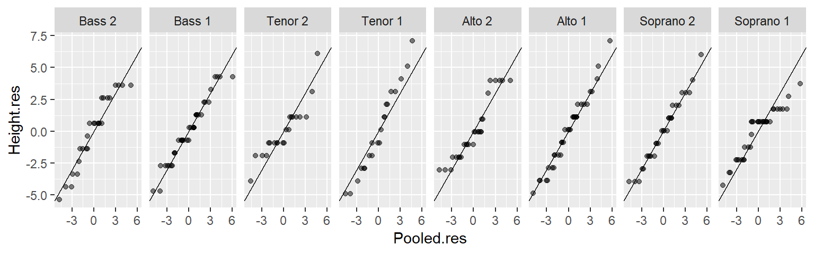
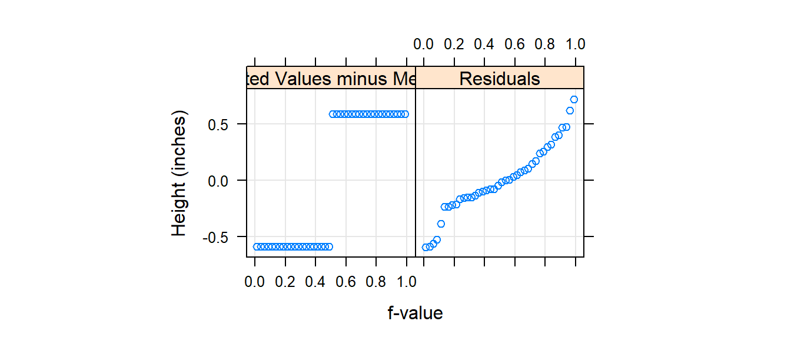
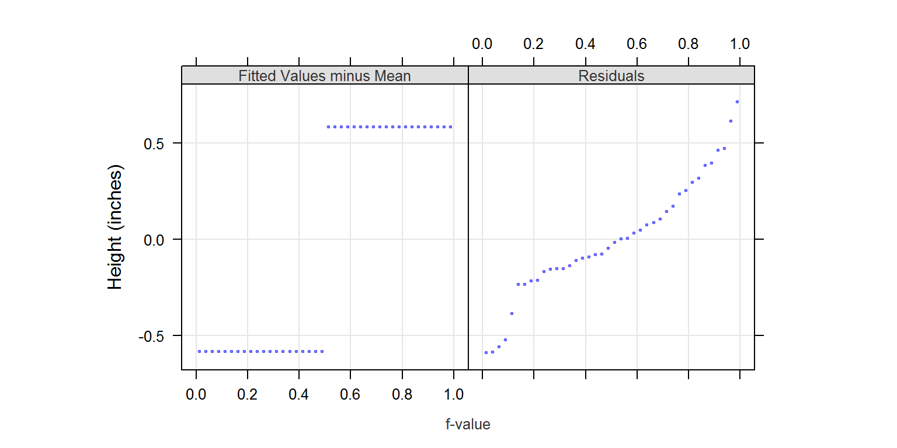
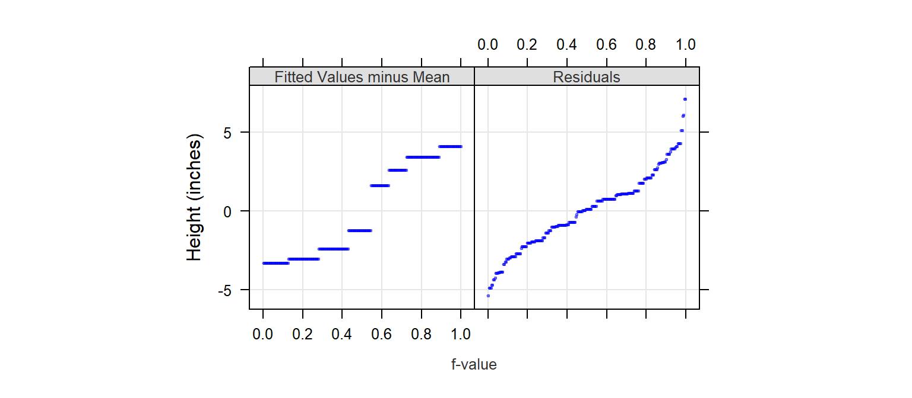
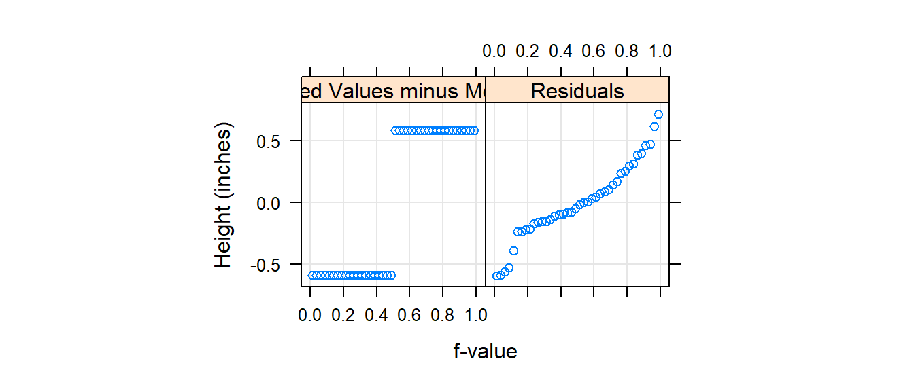
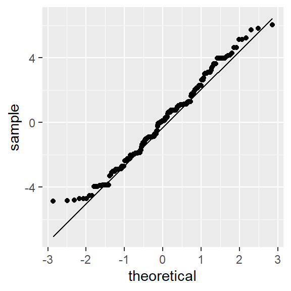

Univariate analysis: Fits and residuals
| dplyr | tidyr | ggplot2 | lattice |
|---|---|---|---|
| 1.0.7 | 1.1.4 | 3.3.5 | 0.20.45 |
This material can be read in conjunction with pages 34 to 41 of Cleveland’s book.
In previous lectures, we’ve determined that the voice.part singer groups differed only by location (central value) and not so much by spread. In this section, we will expand this analysis by fitting a model (the mean) to our data then exploring the residuals (i.e. the part of the data not explained by the fitted model). This exercise will tackle two objectives:
- To seek a simple mathematical model to characterize both the mean and spread of the data.
- To compare the influence of the voice part to that of the spread in characterizing the variation in height values (this to help address the question “are the mean values of the voice parts significantly different?”).
Fitting the data
Univariate data can be characterized by their location and by their spread. The different groups of singers differ by their central values, we will therefore fit the group means to each group batch and compare the residuals between groups.
First, we’ll load the libraries that will be used in this exercise, then load the singer data into the object df.
library(dplyr)
library(tidyr)
library(ggplot2)
library(lattice)
df <- singerNext, we’ll plot the singer values using jittered points, then add an orange point to each batch which will represent each group’s mean.
ggplot(df, aes(y = height, x = voice.part)) +
geom_jitter(width = 0.1, height = 0, alpha = 0.1) +
stat_summary(fun = "mean", geom = "point", cex = 3, pch = 21, col = "red", bg = "orange") 
We’ve fitted each group with the mean–a mathematical description of the batches. Note that we could have used other measures of location such as the median, but since the data seem to follow a symmetrical distribution, the mean is an adequate choice.
Computing the residuals
Now we’ll subtract the group means from their respective group values: this will give us the residuals for each batch.
# Add residual values to the data
df2 <- df %>%
group_by(voice.part) %>%
mutate(Height.res = height - mean(height))Next, we will generate a plot of the (jittered) residuals.
# Now plot the data after fitting height with group mean
ggplot(df2) + aes(y=Height.res, x=voice.part) +
geom_jitter(width = 0.1, height=0, alpha=0.1) +
stat_summary(fun = "mean", geom = "point", cex = 3, pch = 21, col = "red", bg="orange") 
We’ve normalized the batches to a common location. Note that the values along the y-axis have changed: all values are now spread around 0. Next, we’ll check that the batches of residuals have similar spread.
Comparing the residuals
The feature that interests us in the residuals is the spread. We’ve learned that a good way to compare spreads is to plot the quantiles of each batch against one another.
Pairwise q-q plots with the lattice package
If we want to compare all batches of residuals, we can create a pairwise q-q plot using the lattice package.
f.rng <- min(tapply(df2$Height.res, df2$voice.part, length))
fun1 <- function(x,f.rng) {approx(1:length(x), sort(x), n = f.rng )$y}
t1 <- aggregate(df2$Height.res ~ df2$voice.part, FUN = fun1, f.rng = f.rng )
t2 <- as.data.frame(t(t1[,-1]))
names(t2) <- t1[,1]
splom(~t2, axis.text.cex = 0.4, pch = 20,
varname.cex=0.5,
pscales=3,
prepanel.limits = function(x) (range(t2)),
panel = function(x,y,...){
panel.grid()
panel.splom(x,y,...)
panel.abline(0, 1, col="grey")
})
Note that the plots are symmetrical about the diagonal. The q-q plots suggest that the spreads are very similar across singer heights given that the points fall almost perfectly along the one-to-one line.
Comparing batches to pooled residuals using a QQ plot
Since the spreads are homogeneous across the batches, we may choose to combine (pool) the residuals and compare the residuals of each batch to the pooled residuals. The advantage with this approach is that we are increasing the size of the reference residual distribution thus reducing uncertainty that results from a relatively small sample size.
df3 <- df2 %>%
group_by(voice.part) %>%
arrange(Height.res) %>%
mutate(f.val = (row_number() - 0.5) / n()) %>%
ungroup() %>%
mutate(Pooled.res = quantile(Height.res, probs = f.val)) %>%
select(voice.part, Height.res, Pooled.res)
ggplot(df3, aes(y = Height.res, x = Pooled.res)) + geom_point(alpha = 0.5) +
geom_abline(intercept = 0, slope = 1) +
facet_wrap(~ voice.part, nrow = 1) 
All eight batches seem to have similar spreads. This makes it possible to compare batch means using a residual-fit spread plot (covered in the next section).
Residual-fit spread plot
So far, we’ve learned that the spreads are the same across all batches. This makes it feasible to assess whether the differences in means are comparable in magnitude to the spread of the pooled residuals.
A simple example
First, let’s compare the following two plots. Both plots show two batches side-by-side. The difference in location is nearly the same in both plots (group a and b have a mean of 10 and 11 respectively), but the difference in spreads are not.
Plot 2 does not allow us to say, with confidence, that the two batches differ significantly despite both means being different. Plot 1 on the other hand, shows a significant difference in batch locations. So the answer to the question is one of relative spread of the means vs the residuals.
For example, in Plot 1, the spread (or difference) in mean values is relatively large compared to the spread of the residuals for each group (note that the spreads are nearly identical between both batches a and b). The difference in means spans one unit while the spread of each sets of residuals spans about the same amount. So the difference in location is significant.
If we split each batch in Plot 1 into a location component plot (normalized to the overall mean) and a pooled residual component plot then compare those values against a quantile, we get a residual-fit spread plot, or r-f spread plot for short.

It’s clear from this r-f spread plot that the spread of the mean distribution (between batches a and b) is important compared to that of its residuals. This suggests that the groups a and b explain much of the variability in the data.
For Plot 2, the difference in mean values is also one unit, but the spread of residuals spans almost 5 units. An r-f spread plot makes this difference quite clear.

The spread between each batch’s fitted mean is small compared to that of the combined residuals suggesting that much of the variability in the data is not explained by the groups a and b.
Are the fitted voice part values significantly different?
We’ll use lattice’s rfs and oneway functions to generate the r-f plot for the singer data. Note that the plot displays the spread of the modeled means after subtracting these means with the overall mean (remember, the goal is to compare the spreads about a common central value and not to compare their absolute values).
rfs(oneway(height ~ voice.part, data = singer, spread = 1),
aspect = 1,
ylab = "Height (inches)")
After normalizing the data to the global mean, the r-f spread plot splits the singer height data into two parts: modeled mean and residual. For example, the smallest value in the Bass 2 group is 66. When normalized to the global mean, that value is -1.29. The normalized value is then split between the group (normalized) mean of 4.1 and its residual of -5.39 (i.e. the difference between its value and the Bass 2 group mean). These two values are then each added to two separate plots: the fitted values plot and the residuals plot. This process is repeated for each observation in the dataset to generate the final r-f spread plot.
The spread of the fitted heights (across each voice part) is not insignificant compared to the spread of the combined residuals. So height differences between singer groups cannot be explained by random chance alone or, put another way, the voice-parts can explain a good part of the variation in the data.
Generating a residual-fit plot with ggplot
To generate the R-F plot using ggplot2, we must first split the data into its fitted and residual components (something the rfs function did for us). We’ll make use of piping operations to complete this task.
df1 <- singer %>%
mutate(norm.hgt = height - mean(height)) %>%
group_by(voice.part) %>%
mutate( Residuals = norm.hgt - mean(norm.hgt),
`Fitted Values` = mean(norm.hgt))%>%
ungroup() %>%
select(-height, -voice.part, -norm.hgt) %>%
pivot_longer(names_to = "type", values_to = "value", cols=everything()) %>%
group_by(type) %>%
arrange(value) %>%
mutate(`f-value` = (row_number() - 0.5) / n()) Next, we plot the data.
ggplot(df1, aes(x = `f-value`, y = value)) +
geom_point(alpha = 0.3, cex = 1.5) +
facet_wrap(~ type) +
ylab("Height (inches)")
An alternative to the side-by-side R-F plot is one where both fits and residuals are overlapping.
ggplot(df1, aes(x = `f-value`, y = value, col = type)) +
geom_point(alpha = 0.3, cex = 1.5) +
ylab("Height (inches)")
Comparing pooled residuals to the normal distribution
Our exploration of the singer height batches have been visual thus far. But there may be times when the analysis may need to culminate in a statistical test. Some of these tests reduce the data to mathematically tractable models such as the mean and the standard deviation (which follows a normal distribution).
We’ll take advantage of the pooled residuals to give us a larger sample size for comparison with the theoretical normal distribution.
# Find the equation for the line
ggplot(df3, aes(sample = Pooled.res)) + stat_qq(distribution = qnorm) +
geom_qq_line(distribution = qnorm)
This dataset has behaved quite well. Its batches differed only by location, yet its spread remained homogeneous (enough) across the batches to pool them and enable us to confirm, with greater confidence, that the spread follows a normal distribution.
This well behaved dataset allows us to model its spread using the sample standard deviation. It’s important to note that had the data not followed a normal distribution, then characterizing its spread using the standard deviation would have been inappropriate. Unfortunately, many ancillary data analysts seldom check the distribution requirements of their data before choosing to characterize its distribution using the standard deviation. In such a situation, you would have to revert to a far less succinct characterization of spread: the quantile.
You can compute the standard deviation as:
sd(df2$Height.res)[1] 2.465049We can now model singer height by both voice.part means, and the group standard deviation of 2.47.
 Manny Gimond (2022)
Manny Gimond (2022)